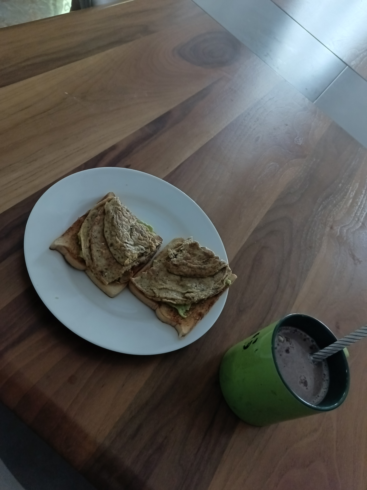
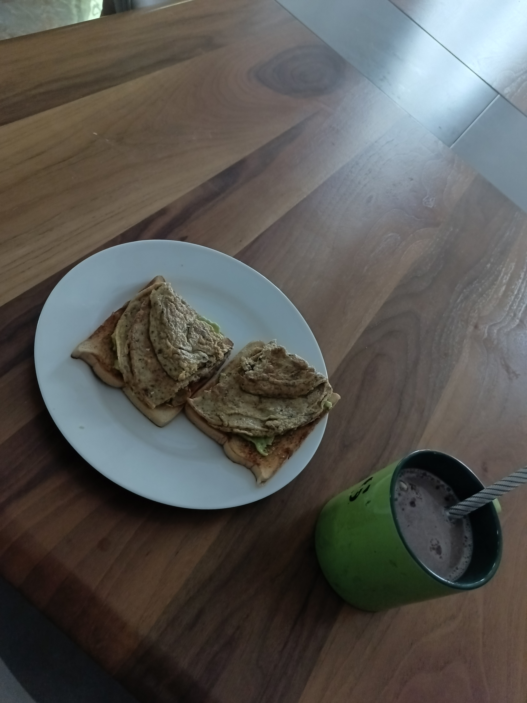

This is how to make the perfect Fried Egg.
 

First Method
(Scrambled with tomato and Onion)
To make it, you'll need these ingredients:
- 2 eggs
- 1 medium sized tomato
- 1 small onion
- quarter a seasoning cube
- pinch of salt
- tsp of cameroun pepper
- tsp of oil or butter
- tsp of paprika powder
- tsp of garlic powder
- chopped chillies(optional)
- tsp of sardines
- two slices of bread
- half an avocado(optional)
For the tea (optional)
- Boiling water, as much as you desire
- 2 spoons of powdered milk (you can adjust it if you want)
- 2 spoons of milo (you can adjust it if you want)
- Tsp of Horlick (optional)
INSTRUCTIONS
- Boil your water
- Crack the eggs into a bowl whisk, till both yolks are beaten.
- Heat your pan and add your grease of choice
- Chop your onions and tomato and add to your pan
- Stir often and after about 2 mins add your seasonings
- Add salt and sardines to your eggs
- Then pour in your eggs into your pan.
- Stir often and let it cook for about 3-5 mins
- Toast your bread and mash your avocado
- Pour your water and add your milk, milo and horlick